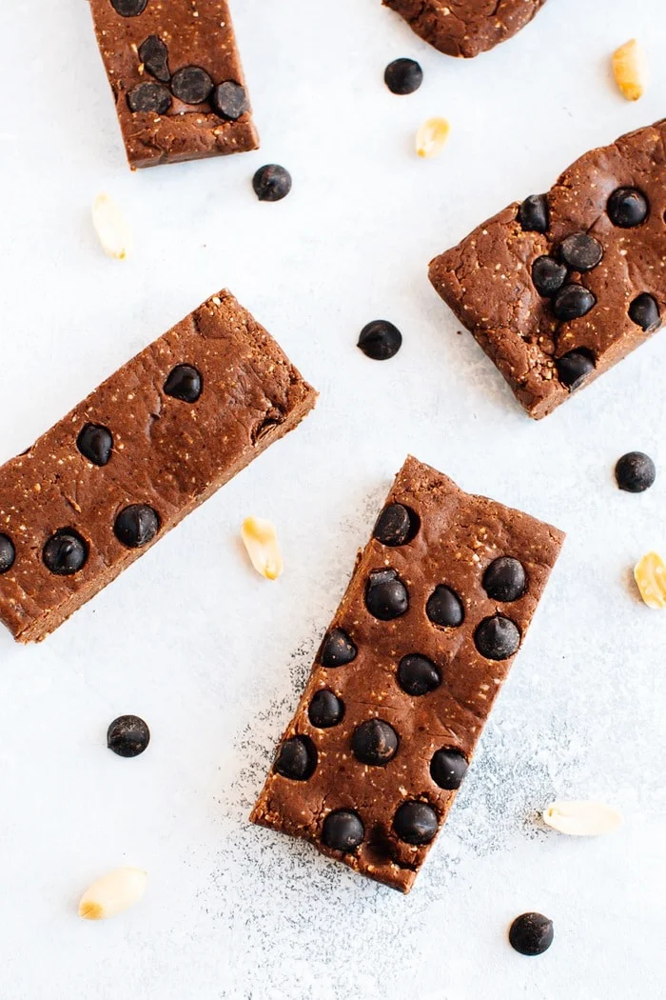

Peanut Butter Chocolate Protein Bar

These no bake peanut butter chocolate protein bars taste delicious and each bar has 9 grams of protein. Plus, they're so easy to make.
High in protein! Just like my regular easy protein bar recipe, these bars are packed with protein – about 9 grams per bar.
E-A-S-Y. Seriously, I can throw these together in 15 minutes or less!
Gluten-free and paleo-friendly, with a vegan option.
Chocolate. ’Nough said.
Ingredients:
10 pitted medjool dates
1/2 cup peanuts
1/2 cup egg white
protein powder collagen and vegan protein powders work too
2 tablespoons cocoa powder
1/4 teaspoon sea salt
1-3 tablespoons of water if needed
2 tablespoons dark chocolate chunks or chips
Directions:
- Line a loaf pan with parchment paper.
- Add dates, peanuts, protein powder, cocoa powder and sea salt
into the base of your food processor. Process until everything
is combined and peanuts are broken down into tiny bits.
- At this point the mixture might be sticking together well and
forming a ball of dough. If so, great! If not, it may be dry and
not really sticking together (it will depend on how moist your dates were).
If this is the case you’ll want to add a little water. Add 1 Tablespoon, run
the food processor and see if the mixture starts holding together. If not,
add another tablespoon and blend again. You'll likely only need to add 1-3 Tablespoons of water.
- Once the mixture is holding together, transfer into the loaf pan lined with parchment. Fold the parchment
over top and press the mixture evenly into the pan.
- Once even, add chocolate chunks and press those into the top of the mixture as well.
- Place the mixture in the fridge to harden up (about 30 mins to 1 hour) before removing from pan and cutting into 5 bars.
- Store bars in fridge for up to 1 week. Enjoy cold or at room temperature.